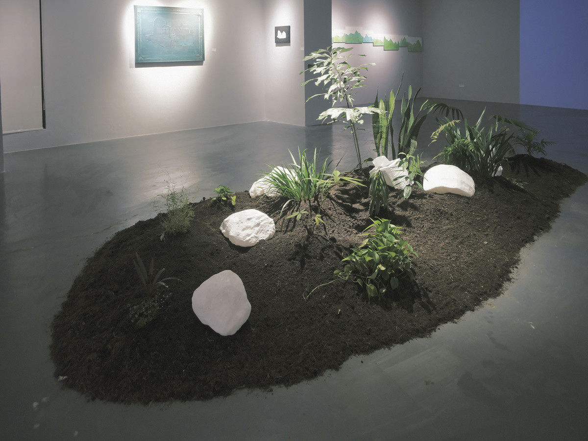

广场系列

树脂材料打印，植物，泥土，尺寸可变，2023
将世界上爆发过革命的七个广场上的小石子收集过来，放大成石头并在展厅里围合成一个“独立广场”。七个监视器里飘扬着七种颜色的旗帜，耳机里播放这七个国家的语言对广场的描述。作品中这些石头的图像数据通过互联网和社交媒体，在网友的协助下得以收集。它们虽然来自真实的广场，但最终呈现在展厅里的是数字模型物，它们与电脑绘制的旗帜、人工AI的声音共同构建的是一个“算法世界”里的“广场”。
这七个广场分别是：光州市政厅广场、巴黎协和广场、基辅独立广场、泰国暹罗广场、墨西哥宪法广场、开罗解放广场、马德里太阳门广场。